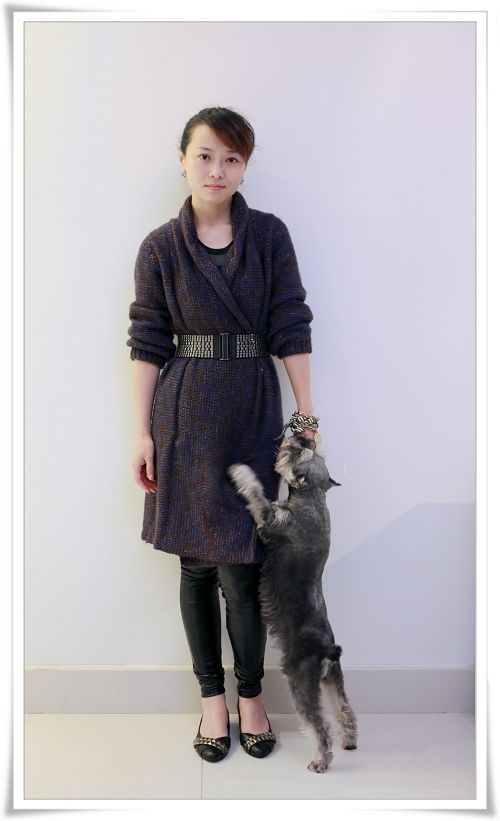

Dress Blog @ Apr 19, 2010
反复无常的天气，一道闪电从天空劈到不远处的地面，把我和Sherry吓了一跳。夜里躺在床上听着屋外的雷声，在特别珍惜家的情绪中入眠。今天，楼道的地面和墙壁上都是水气，家里必须开着空调抽湿，中午阿姨擦过的地压根没干过，上面依然有水渍。。。这天气什么时候是个尽头？
可是我的心情却一点没有受到天气的影响，我会把情绪垃圾倒出来，美好的部分自己藏着咀嚼着享受着，谁没有过去呢？别人觉得我生活美好与否重要吗？当然不重要，重要的是自己实实在在拥有着幸福。又是光光的凡人警句：“年轻时候的爱情总是让人感动。只是我一看她写的情景就知道他们会分手的。太用劲的爱情最后都会分手。”青春真的象野狗，一不高兴就跑出去撒欢，觉得自己长大、成熟了也是在一两年间，忽然心里的纷纷扰扰就沉淀了。
这两天穿着长毛衣，入手几年一直没有为它找到更好的表达方式，这一季的新腰带和鞋或许可以让这件家常毛衣显得不那么家常？天气再热些，可以为腰带和这款鞋搭配黑色风衣，效果又会不同。搭配衣饰充满无穷乐趣，如果作为职业是不是又会失去了这种乐趣？无论怎样，当我脱下围裙摘下浴帽饱餐一顿之后，依然要为今天的搭配来两张照片，我的狗狗们也来抢镜捏。


13 Responses to “Dress Blog”
2010-04-19
好久不见土豆了~
2010-04-19
睡衣吗？？
2010-04-19
哦，你家睡衣是毛衣吗？
2010-04-20
我是不是老说人生警句，心灵鸡汤，格言大师那种，吼吼吼。。。：）你好妩媚啊。
2010-04-20
我觉得你的裤子比较酷。
2010-04-20
太用劲的爱情最后都会分手
嗯。是人生警句~
话说我的拍摄完全没技术可言：（真要入货巨大机？要想想^^^^^^毛衣外套颜色很好看，手上拿一串来个特写撒~
2010-04-20
恩，你的人生警句深得我心啊~如果用数码相机拍的话，不管是单反还是卡片机，事先有按照效果要求特别设置最好，如果没有还是后期处理下比较好看，仅供参考。
2010-04-20
现在很流行PVC啊……
看到大明星们都穿这个
不过不要让这个东西接触高温，超过200度会分解出有毒物质
2010-04-20
@大姜炖去
如果大明星们都光着屁股,
那你也光着屁股?
2010-04-20
茶现在生活态度到一种境界了，现实中国普遍浮躁的环境下能够保持这么美好的生活态度真不多见，真是羡慕啊！
2010-04-21
很久没有在MSN上见到你，甚是想念，希望一切都好。：）宇辰
2010-04-21
第二张尤其美
2010-04-26
@USILLY
我想我的重点应该是后面一句，谢谢
pvc在没有做衣服前是建筑材料
Leave A Reply
存档只读，评论已关闭。